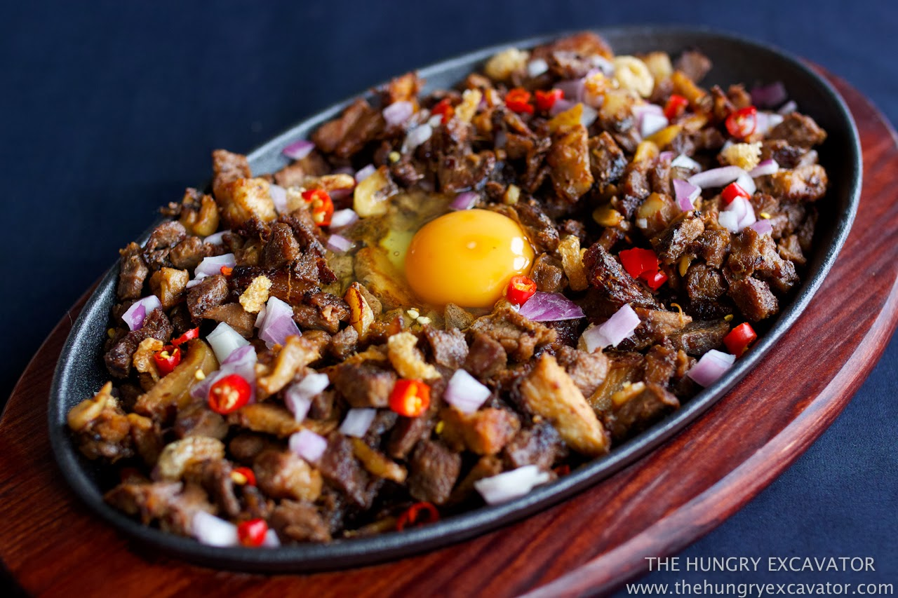

Classic Sisig

Description:
Sisig is a traditional Filipino dish originating from the Pampanga region, known for its sizzling texture and bold flavors. It typically consists of chopped pork parts (such as ears, cheeks, and jowls) seasoned with calamansi (Philippine lime), soy sauce, and chili, often served on a hot plate to enhance the experience. The dish has evolved over time, incorporating various ingredients like chicken livers and onions, and is often topped with a raw egg. Sisig is not only a staple in Filipino cuisine but also a cultural symbol, reflecting the country's culinary creativity and resourcefulness.
Ingredients:
- 1 kg pig’s face (maskara: ears, cheeks, snout)
- 200 g pork liver
- ½ cup pork belly (optional, for added fat)
- 1 large red onion, finely chopped
- 3–4 green chilies (siling pansigang), sliced
- 2–3 bird’s eye chilies (siling labuyo), chopped (optional for spice)
- 3 tbsp calamansi juice (or lemon juice)
- 2 tbsp soy sauce
- 2 tbsp mayonnaise (optional)
- Salt & pepper to taste
- 1 raw egg (optional, for sizzling plate)
Steps:
- Boil pork parts – In a pot, boil pig’s face and liver with onion, garlic, bay leaves, peppercorns, and salt for 1–1.5 hrs until tender.
- Grill – Charcoal grill or broil the boiled pork until slightly crispy.
- Chop finely – Dice pork and liver into small pieces.
- Mix – In a bowl, combine pork, onions, chilies, calamansi juice, soy sauce, and optional mayonnaise.
- Serve sizzling – Heat a cast-iron plate with butter, add the sisig, and crack a raw egg on top.
Home